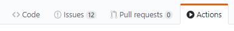

At GitHub Universe 2018, GitHub launched GitHub Actions in beta. Later in
August 2019, GitHub announced the expansion of GitHub Actions to include
Continuous Integration / Continuous Delivery (CI/CD). At Universe 2019,
GitHub
announced
that Actions are out of beta and generally available. I spent the last few
days, while I was taking some vacation during Thanksgiving, to explore GitHub
Actions for automation of Python projects.
With my involvement in the Gaphor project, we have a GUI
application to maintain, as well as two
libraries, a diagramming widget called
Gaphas, and we more recently took over
maintenance of a library that enables multidispatch and events called
Generic. It is important to have an
efficient programming workflow to maintain these projects, so we can spend more
of our open source volunteer time focusing on implementing new features and
other enjoyable parts of programming, and less time doing manual and boring
project maintenance.
In this blog post, I am going to give an overview of what CI/CD is, my previous
experience with other CI/CD systems, how to test and deploy Python applications
and libraries using GitHub Actions, and finally highlight some other Actions
that can be used to automate other parts of your Python workflow.
Overview of CI/CD
Continuous Integration (CI) is the practice of frequently integrating changes to
code with the existing code repository.
Continuous Delivery / Delivery (CD) then extends CI by making sure the software checked in
to the master branch is always in a state to be delivered to users, and
automates the deployment process.

For open source projects on GitHub or GitLab,
the workflow often looks like:
- The latest development is on the mainline branch called master.
- Contributors create their own copy of the project, called a fork, and then
clone their fork to their local computer and setup a development environment.
- Contributors create a local branch on their computer for a change they want
to make, add tests for their changes, and make the changes.
- Once all the unit tests pass locally, they commit the changes and push them
to the new branch on their fork.
- They open a Pull Request to the original repo.
- The Pull Request kicks off a build on the CI system automatically, runs
formatting and other lint checks, and runs all the tests.
- Once all the tests pass, and the maintainers of the project are good with
the updates, they merge the changes back to the master branch.
Either in a fixed release cadence, or occasionally, the maintainers then add a
version tag to master, and kickoff the CD system to package and release a new
version to users.
My Experience with other CI/CD Systems
Since most open source projects didn't want the overhead of maintaining their
own local CI server using software like Jenkins, the use of cloud-based or
hosted CI services became very popular over the last 7 years. The most
frequently used of these was Travis CI with Circle CI a close second. Although
both of these services introduced initial support for Windows over the last
year, the majority of users are running tests on Linux and macOS only. It is
common for projects using Travis or Circle to use another service called
AppVeyor if they need to test on Windows.
I think the popularity of Travis CI and the other similar services is based on
how easy they were to get going with. You would login to the service with your
GitHub account, tell the service to test one of your projects, add a YAML
formatted file to your repository using one of the examples, and push to the
software repository (repo) to trigger your first build. Although these services
are still hugely popular, 2019 was the year that they started to lose some of
their momentum. In January 2019, a company called Idera bought Travis CI. In
February Travis CI then
laid-off a lot
of their senior engineers and technical staff.
The 800-pound gorilla entered the space in 2018, when Microsoft bought GitHub
in June and then rebranded their Visual Studio Team Services ecosystem and
launched Azure Pipelines as a CI service in September. Like most of the popular
services, it was free for open source projects. The notable features of this
service was that it launched supporting Linux, macOS, and Windows, and it
allowed for 10 parallel jobs. Although the other services offer parallel
builds, on some platforms they are limited for open source projects, and I
would often be waiting for a server called an "agent" to be available with
Travis CI. Following the lay-offs at Travis CI, I was ready to explore other
services to use, and Azure Pipelines was the new hot CI system.
In March 2019, I was getting ready to launch version 1.0.0 of Gaphor after
spending a couple of years helping to update it to Python 3 and PyGObject. We
had been using Travis CI, and we were lacking the ability to test and package
the app on all three major platforms. I used this as an opportunity to learn
Azure Pipelines with the goal of being able to fill this gap we had in our
workflow.
My takeaways from this experience is that Azure Pipelines is lacking much of
the ease of use as compared to Travis CI, but has other huge advantages
including build speed and the flexibility and power to create complex
cross-platform workflows. Developing a complex workflow on any of these CI
systems is challenging because the feedback you receive takes a long time to
get back to you. In order to create a workflow, I normally:
- Create a branch of the project I am working on
- Develop a YAML configuration based on the documentation and examples available
- Push to the branch, to kickoff the CI build
- Realize that something didn't work as expected after 10 minutes of waiting
for the build to run
- Go back to step 2 and repeat, over and over again
One of my other main takeaways was that the documentation was often lacking
good examples of complex workflows, and was not very clear on how to use each
step. This drove even more trial and error, which requires a lot of patience as
you are working on a solution. After a lot of effort, I was able to complete a
configuration that tested Gaphor on Linux, macOS, and Windows. I also was able
to partially get the CD to work by setting up Pipelines to add the built dmg
file for macOS to a draft release when I push a new version tag. A couple of
weeks ago, I was also able build and upload Python Wheel and source
distribution, along with the Windows binaries built in
MSYS2.
Despite the challenges getting there, the result was very good! Azure Pipelines
is screaming fast, about twice as fast as Travis CI was for my complex
workflows (25 minutes to 12 minutes). The tight integration that allows testing
on all three major platforms was also just what I was looking for.
How to Test a Python Library using GitHub Actions
With all the background out of the way, now enters GitHub Actions. Although I
was very pleased with how Azure Pipelines performs, I thought it would be nice
to have something that could better mix the ease of use of Travis CI with the
power Azure Pipelines provides. I hadn't made use of any Actions before
trying to replace both Travis and Pipelines on the three Gaphor projects that
I mentioned at the beginning of the post.
I started first with the libraries, in order to give GitHub Actions a try with
some of the more straightforward workflows before jumping in to converting Gaphor
itself. Both Gaphas and Generic were using Travis CI. The workflow was pretty
standard for a Python package:
- Run lint using pre-commit to run
Black over the code base
- Use a matrix build to test the library using Python 2.7, 3.6, 3.7, and 3.8
- Upload coverage information
To get started with GitHub Actions on a project, go to the Actions tab on the
main repo:

Based on your project being made up of mostly Python, GitHub will suggest three
different workflows that you can use as templates to create your own:
- Python application - test on a single Python version
- Python package - test on multiple Python versions
- Publish Python Package - publish a package to PyPI using Twine
Below is the workflow I had in mind:

I want to start with a lint job that is run, and once that has successfully
completed, I want to start parallel jobs using the multiple versions of Python
that my library supports.
For these libraries, the 2nd workflow was the closest for what I was looking
for, since I wanted to test on multiple versions of Python. I selected the
Set up this workflow option. GitHub then creates a new draft YAML file based
on the template that you selected, and places it in the .github/workflows
directory in your repo. At the top of the screen you can also change the name
of the YAML file from pythonpackage.yml to any filename you choose. I called
mine build.yml, since calling this type of workflow a build is the
nomenclature I am familiar with.
As a side note, the online editor that GitHub has implemented for creating
Actions is quite good. It includes full autocomplete (toggled with Ctrl+Space),
and it actively highlights errors in your YAML file to ensure the correct
syntax for each workflow. These type of error checks are priceless due to the
long feedback loop, and I actually recommend using the online editor at this
point over what VSCode or Pycharm provide.
Execute on Events
The top of each workflow file are two keywords: name and on. The name sets
what will be displayed in the Actions tab for the workflow you are creating. If
you don't define a name, then the name of the YAML file will be shown as the
Action is running. The on keyword defines what will cause the workflow to be
started. The template uses a value of push, which means
that the workflow will be kicked off when you push to any branch in the
repo. Here is an example of how I set these settings for my libraries:
name: Build
on:
pull_request:
push:
branches: master
Instead of running this workflow on any push event, I wanted a build to happen
during two conditions:
- Any Pull Request
- Any push to the master branch
You can see how that was configured above. Being able to start a workflow on
any type of event in GitHub is extremely powerful, and it one of the advantages
of the tight integration that GitHub Actions has.
Lint Job
The next section of the YAML file is called jobs, this is where each main
block of the workflow will be defined as a job. The jobs will then be further
broken down in to steps, and multiple commands can be executed in each step.
Each job that you define is given a name. In the template, the job is named
build, but there isn't any special significance of this name. They also are
running a lint step for each version of Python being tested against. I decided
that I wanted to run lint once as a separate job, and then once that is
complete, all the testing can be kicked off in parallel.
In order to add lint as a separate job, I created a new job called lint
nested within the jobs keyword. Below is an example of my lint job:
jobs:
lint:
runs-on: ubuntu-latest
steps:
- uses: actions/checkout@v1
- name: Setup Python
uses: actions/setup-python@v1
with:
python-version: '3.x'
- name: Install Dependencies
run: |
pip install pre-commit
pre-commit install-hooks
- name: Lint with pre-commit
run: pre-commit run --all-files
Next comes the runs-on keyword which defines which platform GitHub Actions
will run this job on, and in this case I am running on linting on the latest
available version of Ubuntu. The steps keyword is where most of the workflow
content will be, since it defines each step that will be taken as it is run.
Each step optionally gets a name, and then either defines an Action to use, or a
command to run.
Let's start with the Actions first, since they are the first two steps in my
lint job. The keyword for an Action is uses, and the value is the action repo
name and the version. I think of Actions as a library, a reusable step that I
can use in my CI/CD pipeline without having to reinvent the wheel. GitHub
developed these first two Actions that I am making use of, but you will see
later that you can make use of any Actions posted by other users, and even
create your own using the Actions SDK and some TypeScript. I am now convinced
that this is the "secret sauce" of GitHub Actions, and will be what makes this
service truly special. I will discuss more about this later.
The first two Actions I am using clones a copy of the code I am testing from my
repo, and sets up Python. Actions often use the with keyword for the
configuration options, and in this case I am telling the setup-python action
to use a newer version from Python 3.
- uses: actions/checkout@v1
- name: Setup Python
uses: actions/setup-python@v1
with:
python-version: '3.x'
The last two steps of the linting job are using the run keyword. Here I am
defining commands to execute that aren't covered by an Action. As I mentioned
earlier, I am using pre-commit to run Black over the project and check the code
formatting is correct. I have this broken up in to two steps:
- Install Dependencies - installs pre-commit, and the pre-commit hook
environments
- Lint with pre-commit - runs Black against all the files in the repo
In the Install Dependencies step, I am also using the pipe operator, "|",
which signifies that I am giving multiple commands, and I am separating each
one on a new line. We now should have a complete lint job for a Python library,
if you haven't already, now would be a good time to commit and push your
changes to a branch, and check the lint job passes for your repo.
Test Job
For the test job, I created another job called test, and it also uses
the ubuntu-latest platform for the job. I did use one new keyword here called
needs. This defines that this job should only be started once the lint job has
finished successfully. If I didn't include this, then the lint job and all the
other test jobs would all be started in parallel.
test:
needs: lint
runs-on: ubuntu-latest
Next up I used another new keyword called strategy. A strategy creates a build
matrix for your jobs. A build matrix is a set of different configurations of the
virtual environment used for the job. For example, you can run a job against
multiple operating systems, tool version, or in this case against different
versions of Python. This prevents repetitiveness because otherwise you would
need to copy and paste the same steps over and over again for different versions
of Python. Finally, the template we are using also had a max-parallel keyword
which limits the number of parallel jobs that can run simultaneously. I am only
using four versions of Python, and I don't have any reason to limit the number
of parallel jobs, so I removed this line for my YAML file.
strategy:
matrix:
python-version: [2.7, 3.6, 3.7, 3.8]
Now on to the steps of the job. My first two steps, checkout the sources and
setup Python, are the same two steps as I had above in the lint job. There is
one difference, and that is that I am using the ${{ matrix.python-version }}
syntax in the setup Python step. I use the {{ }} syntax to define an
expression. I am using a special kind of expression called a context, which is
a way to access information about a workflow run, the virtual environment,
jobs, steps, and in this case the Python version information from the matrix
parameters that I configured earlier. Finally, I use the $ symbol in front of
the context expression to tell Actions to expand the expression in to its
value. If version 3.8 of Python is currently running from the matrix, then ${{
matrix.python-version }} is replaced by 3.8.
steps:
- uses: actions/checkout@v1
- name: Set up Python ${{ matrix.python-version }}
uses: actions/setup-python@v1
with:
python-version: ${{ matrix.python-version }}
Since I am testing a GTK diagramming library, I need to also install some
Ubuntu dependencies. I use the > symbol as YAML syntax to ignore the newlines
in my run value, this allows me to execute a really long command while keeping
my standard line length in my .yml file.
- name: Install Ubuntu Dependencies
run: >
sudo apt-get update -q && sudo apt-get install
--no-install-recommends -y xvfb python3-dev python3-gi
python3-gi-cairo gir1.2-gtk-3.0 libgirepository1.0-dev libcairo2-dev
For my projects, I love using Poetry for managing my Python dependencies.
See my other article on Python Packaging with Poetry and
Briefcase for more
information on how to make use of Poetry for your projects. I am using a custom
Action that Daniel Schep created that installs
Poetry. Although installing Poetry manually is pretty straightforward, I really
like being able to make use of these building blocks that others have created.
Although you should always use a Python virtual environment while you are
working on a local development environment, they aren't really needed since
the environment created for CI/CD is already isolated and won't be reused. This
would be a nice improvement to the install-poetry-action, so that the
creation of virtualenvs are turned off by default.
- name: Install Poetry
uses: dschep/install-poetry-action@v1.2
with:
version: 1.0.0b3
- name: Turn off Virtualenvs
run: poetry config virtualenvs.create false
Next we have Poetry install the dependencies using the poetry.lock file using
the poetry install command. Then we are to the key step of the job, which is
to run all the tests using Pytest. I preface the pytest command with
xvfb-run because this is a GUI library, and many of the tests would fail
because there is no display server, like X or Wayland, running on the CI runner.
The X virtual framebuffer (Xvfb) display server is used to perform all the
graphical operations in memory without showing any screen output.
- name: Install Python Dependencies
run: poetry install
- name: Test with Pytest
run: xvfb-run pytest
The final step of the test phase is to upload the code coverage information. We
are using Code Climate for analyzing coverage,
because it also integrates a nice maintainability score based on things like
code smells and duplication it detects. I find this to be a good tool to help
us focus our refactoring and other maintenance efforts.
Coveralls and Codecov are good
options that I have used as well. In order for the code coverage information to
be recorded while Pytest is running, I am using the
pytest-cov Pytest plugin.
- name: Code Climate Coverage Action
uses: paambaati/codeclimate-action@v2.3.0
env:
CC_TEST_REPORTER_ID: 195e9f83022747c8eefa3ec9510dd730081ef111acd99c98ea0efed7f632ff8a
with:
coverageCommand: coverage xml
CD Workflow - Upload to PyPI
I am using a second workflow for my app, and this workflow would actually be
more in place for a library, so I'll cover it here. The Python Package Index
(PyPI) is normally how we share libraries across Python projects, and it is
where they are installed from when you run pip install. Once I am ready to
release a new version of my library, I want the CD pipeline to upload it to
PyPI automatically.
If you recall from earlier, the third GitHub Action Python workflow template was
called Publish Python Package. This template is close to what I needed for my
use case, except I am using Poetry to build and upload instead of using
setup.py to build and Twine to upload. I also used a slightly different event
trigger.
on:
release:
types: published
This sets my workflow to execute when I fully publish the GitHub release. The
Publish Python Package template used the event created instead. However, it
makes more sense to me to publish the new version, and then upload it to PyPI,
instead of uploading to PyPI and then publishing it. Once a version is uploaded
to PyPI it can't be reuploaded, and new version has to be created to upload
again. In other words, doing the most permanent step last is my preference.
The rest of the workflow, until we get to the last step, should look very
similar to the test workflow:
jobs:
deploy:
runs-on: ubuntu-latest
steps:
- uses: actions/checkout@v1
- name: Set up Python
uses: actions/setup-python@v1
with:
python-version: '3.x'
- name: Install Poetry
uses: dschep/install-poetry-action@v1.2
with:
version: 1.0.0b3
- name: Install Dependencies
run: poetry install
- name: Build and publish
run: |
poetry build
poetry publish -u ${{ secrets.PYPI_USERNAME }} -p ${{ secrets.PYPI_PASSWORD }}
The final step in the workflow uses the poetry publish command to upload the
Wheel and sdist to PyPI. I defined the secrets.PYPI_USERNAME and
secrets.PYPI_PASSWORD context expressions by going to the repository
settings, then selecting Secrets, and defining two new encrypted environmental
variables that are only exposed to this workflow. If a contributor created a
Pull Request from a fork of this repo, the secrets would not be passed to any
of workflows started from the Pull Request. These secrets, passed via the -u
and -p options of the publish command, are used to authenticate with the
PyPI servers.
At this point, we are done with our configuration to test and release a
library. Commit and push your changes to your branch, and ensure all the steps
pass successfully. This is what the output will look like on the Actions tab in
GitHub:

I have posted the final version of my complete GitHub Actions workflows for a
Python library on the Gaphas
repo.
How to Test and Deploy a Python Application using GitHub Actions
My use case for testing a cross-platform Python Application is slightly
different from the previous one we looked at for a library. For the library, it
was really important we tested on all the supported versions of Python. For an
application, I package the application for the platform it is running on with
the version of Python that I want the app to use, normally the latest stable
release of Python. So instead of testing with multiple versions of Python, it
becomes much more important to ensure that the tests pass on all the platforms
that the application will run on, and then package and deploy the app for each
platform.
Below are the two pipelines I would like to create, one for CI and one for CD.
Although you could combine these in to a single pipeline, I like that GitHub
Actions allows so much flexibility in being able to define any GitHub event to
start a workflow. This tight integration is definitely a huge bonus here, and it
allows you to make each workflow a little more atomic and understandable. I
named my two workflows build.yml for the CI portion, and release.yml for the
CD portion.
Caching Python Dependencies
Although the lint phase is the same between a library and an application, I am
going to add in one more optional cache step that I didn't include earlier for
simplification:
- name: Use Python Dependency Cache
uses: actions/cache@v1.0.3
with:
path: ~/.cache/pip
key: ${{ runner.os }}-pip-${{ hashFiles('**/poetry.lock') }}
restore-keys: ${{ runner.os }}-pip-
It is a good practice to use a cache to store information that doesn't often
change in your builds, like Python dependencies. It can help speed up the build
process and lessen the load on the PyPI servers. While setting this up, I also
learned from the Travis CI
documentation
that you should not cache large files that are quick to install, but are slow
to download like Ubuntu packages and docker images. These files take as long to
download from the cache as they do from the original source. This explains why
the cache action doesn't have any examples on caching these types of files.
The caches work by checking if a cached archive exists at the beginning of the
workflow. If it exists, it downloads it and unpacks it to the path location.
At the end of the workflow, the action checks if the cache previously existed,
if not, this is called a cache miss, and it creates a new archive and uploads it
to remote storage.
A few configurations to notice, the path is operating system dependent because
pip stores its cache in different locations. My configuration above is for
Ubuntu, but you would need to use ~\AppData\Local\pip\Cache for Windows and
~/Library/Caches/pip for macOS. The key is used to determine if the correct
cache exists for restoring and saving to. Since I am using Poetry for
dependency management, I am taking the hash of the poetry.lock file and
adding it to end of a key which contains the context expression for the
operating system that the job is running on, runner.os, and pip. This will
look like
Windows-pip-45f8427e5cd3738684a3ca8d009c0ef6de81aa1226afbe5be9216ba645c66e8a,
where the end is a long hash. This way if my project dependencies change, my
poetry.lock will be updated, and a new cache will be created instead of
restoring from the old cache. If you aren't using Poetry, you could also use
your requirements.txt or Pipfile.lock for the same purpose.
As we mentioned earlier, if the key doesn't match an existing cache, it's
called a cache miss. The final configuration option called restore-keys is
optional, and it provides an ordered list of keys to use for restoring the
cache. It does this by sequentially searching for any caches that partially
match in the restore-keys list. If a key partially matches, the action
downloads and unpacks the archive for use, until the new cache is uploaded at
the end of the workflow.
Test Job
Ideally, it would be great to use a build matrix to test across platforms. This
way you could have similar build steps for each platform without repeating
yourself. This would look something like this:
runs-on: ${{ matrix.os }}
strategy:
matrix:
os: [ubuntu-latest, windows-latest, macOS-latest]
steps:
- name: Install Ubuntu Dependencies
if: matrix.os == 'ubuntu-latest'
run: >
sudo apt-get update -q && sudo apt-get install
--no-install-recommends -y xvfb python3-dev python3-gi
python3-gi-cairo gir1.2-gtk-3.0 libgirepository1.0-dev libcairo2-dev
- name: Install Brew Dependencies
if: matrix.os == 'macOS-latest'
run: brew install gobject-introspection gtk+3 adwaita-icon-theme
Notice the if keyword tests which operating system is currently being used in
order to modify the commands for each platform. As I mentioned earlier, the GTK
app I am working on, requires MSYS2 in order to test
and package it for Windows. Since MSYS2 is a niche platform, most of the steps
are unique and require manually setting paths and executing shell scripts. At
some point maybe we can get some of these unique parts better wrapped in an
action, so that when we abstract up to the steps, they can be more common
across platforms. Right now, using a matrix for each operating system in my
case wasn't easier than just creating three separate jobs, one for each
platform.
If you are interested in a more complex matrix setup, Jeff Triplett
posted his
configuration for running five different Django versions against five different
Python versions.
The implementation of the three test jobs is similar to the library test job
that we looked at earlier.
test-linux:
needs: lint
runs-on: ubuntu-latest
...
test-macos:
needs: lint
runs-on: macOS-latest
...
test-windows:
needs:lint
runs-on: windows-latest
The other steps to install the dependencies, setup caching, and test with Pytest
were identical.
CD Workflow - Release the App Installers
Now that we have gone through the CI workflow for a Python application, on to
the CD portion. This workflow is using different event triggers:
name: Release
on:
release:
types: [created, edited]
GitHub has a Release tab that is built in to each repo. The deployment workflow
here is started if I create or modify a release. You can define multiple events
that will start the workflow by adding them as a comma separated list. When I
want to release a new version of Gaphor:
- I update the version number in the
pyproject.toml, commit the change, add
a version tag, and finally push the commit and the tag.
- Once the tests pass, I edit a previously drafted release to point the tag to
the tag of the release.
- The release workflow automatically builds and uploads the Python Wheel and
sdist, the macOS dmg, and the Windows installer.
- Once I am ready, I click on the GitHub option to Publish release.
In order to achieve this workflow, first we create a job for Windows and macOS:
upload-windows:
runs-on: windows-latest
...
upload-macos:
runs-on: macOS-latest
...
The next steps to checkout the source, setup Python, install dependencies,
install poetry, turn off virtualenvs, use the cache, and have poetry install the
Python dependencies are the exact same as the application Test Job above.
Next we build the wheel and sdist, which is a single command when using Poetry:
- name: Build Wheel and sdist
run: poetry build
Our packaging for Windows is using custom shell scripts that run
PyInstaller to package up the app, libraries, and
Python, and makensis to create a Windows installer. We are also using a custom
shell script to package the app for macOS. Once I execute the scripts to
package the app, I then upload the release assets to GitHub:
- name: Upload Assets
uses: AButler/upload-release-assets@v2.0
with:
files: 'macos-dmg/*dmg;dist/*;win-installer/*.exe'
repo-token: ${{ secrets.GITHUB_TOKEN }}
Here I am using Andrew Butler's
upload-release-assets
action. GitHub also has an action to perform this called
upload-release-asset, but
at the time of writing this, it didn't support uploading multiple files using
wildcard characters, called glob patterns. secrets.GITHUB_TOKEN is another
context expression to get the access token to allow Actions permissions to
access the project repository, in this case to upload the release assets to a
drafted release.
The final version of my complete GitHub Actions workflows for the
cross-platform app are posted on the Gaphor
repo.
Future Improvements to My Workflow
I think there is still some opportunity to simplify the workflows that I have
created through updates to existing actions or creating new actions. As I
mentioned earlier, it would be nice to have things at a maturity level so that
no custom environment variable, paths, or shell scripts need to be run. Instead,
we would be building workflows with actions as building blocks. I wasn't
expecting this before I started working with GitHub Actions, but I am sold that
this would be immensely powerful.
Since GitHub recently released CI/CD for Actions, many of the GitHub provided
actions could use a little polish still. Most of the things that I thought of
for improvements, already had been recognized by others with Issues opened for
Feature requests. If we give it a little time, I am sure these will be improved
soon.
I also said that one of my goals was to release to the three major platforms,
but if you were paying attention in the last section, I only mentioned Windows
and macOS. We are currently packaging our app using Flatpak for Linux and it is
distributed through FlatHub. FlatHub does have an
automatic build system, but it requires manifest files stored in a special
separate FlatHub repo for the app. I also contributed to the Flatpak Builder
Tools in order to
automatically generate the needed manifest from the poetry.lock file. This
works good, but it would be nice in the future to have the CD workflow for my
app, kickoff updates to the FlatHub repo.
Bonus - Other Great Actions
Debugging with
tmate - tmate is
a terminal sharing app built on top of tmux. This great action allows you to
pause a workflow in the middle of executing the steps, and then ssh in to the
host runner and debug your configuration. I was getting a Python segmentation
fault while running my tests, and this action proved to be extremely useful.
Release Drafter - In
my app CD workflow, I showed that I am executing it when I create or edit a
release. The release drafter action drafts my next release with release notes
based on the Pull Requests that are merged. I then only have to edit the
release to add the tag I want to release with, and all of my release assets
automatically get uploaded. The PR
Labeler action goes along
with this well to label your Pull Requests based on branch name patterns like
feature/*.